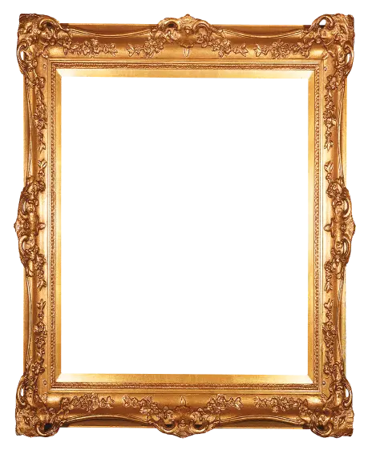

Artistes présentés


Jean-Jacques Audubon

William Henry Hunt

August Friedrich Schenck

Felix Philipp Kanitz

Marianne North
Comment ça marche ?
Voici les artistes dont les oeuvres sont exposées à l’exposition.
Pour accéder aux pages des artistes, faites défiler le carrousel de portraits avec votre doigt ou utilisez les boutons puis cliquez sur leur portrait.